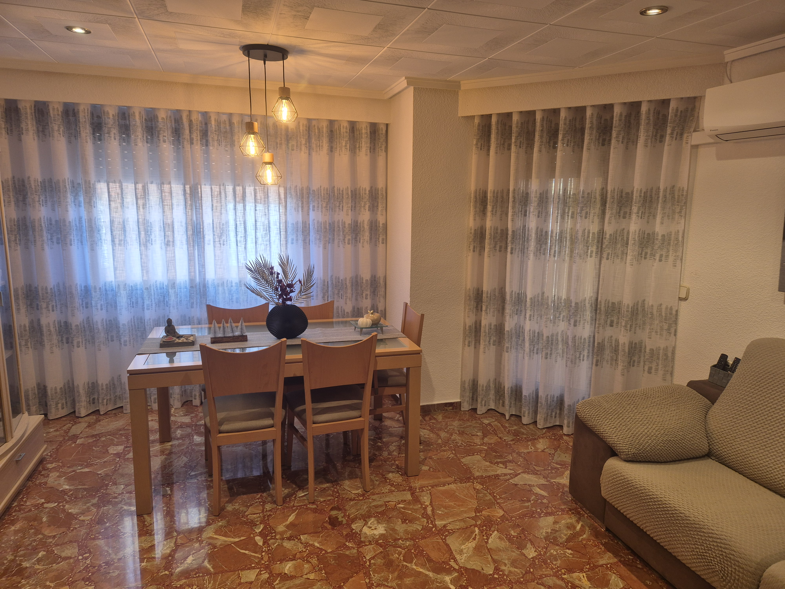
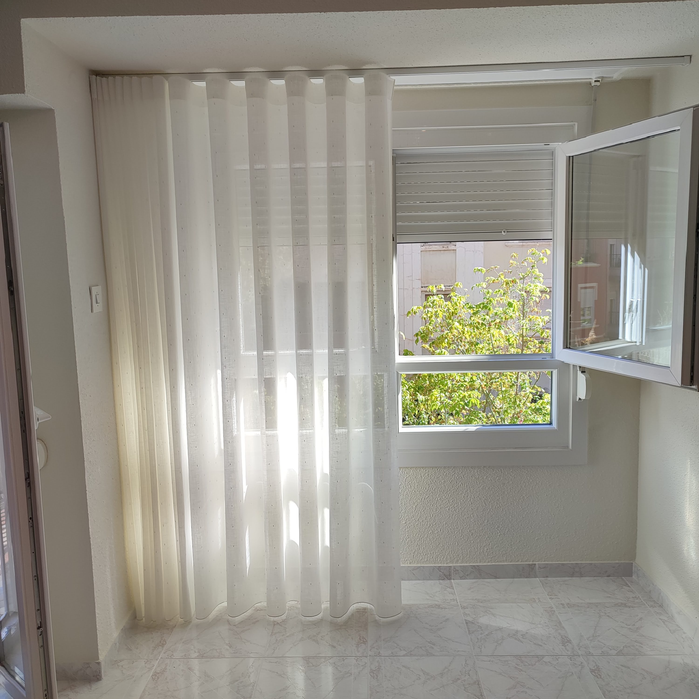
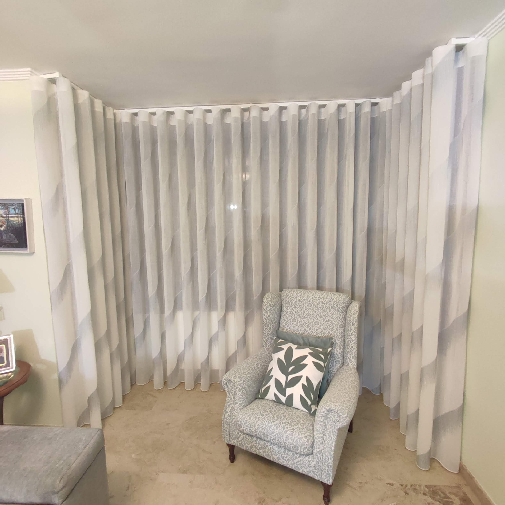

Cortinas a la medida
Confeccion personalizada para salones, dormitorios y espacios comerciales.
Imagen principal del proyecto

Post
Este proyecto de cortinas a medida parte de una idea clara: filtrar luz natural sin bloquear la sensacion de amplitud. Trabajamos una confeccion de onda perfecta para conseguir ritmo visual, pliegue estable y un frente uniforme durante todo el recorrido.
La propuesta combina tejido principal y ajuste de altura para que el conjunto funcione tanto abierto como cerrado. El resultado es una pieza textil que ordena la fachada interior de la ventana y mejora la atmosfera del espacio durante todo el dia.
Mas imagenes y detalles



